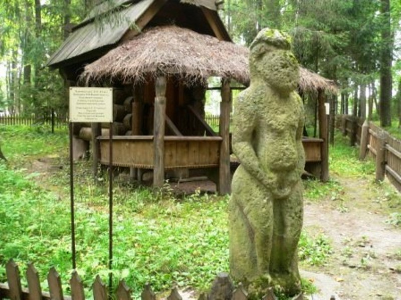

|  | Министерство культуры Российской Федерации Портал Культура.рф Проект «Образы России» |
Музей-заповедник Абрамцево
Каменная баба

Привезена С. И. Мамонтовым из Харьковской губернии во второй половине 1870-х гг., в период строительства Донецко–Мариупольской железной дороги. Культ каменных идолов («балбалов») принесли с собой половецкие (кипчакские) племена, перекочевавшие в середине XI века из Алтая в приднепровские и донецкие степи. Скульптуры были важнейшим элементом погребального обряда и изображали умерших представителей аристократической верхушки (князей, военачальников и их жен). В опущенных к животу руках располагался ритуальный сосуд для жертвоприношений. Статуи устанавливались на курганах и в специальных святилищах, выполнялись в основном из песчаника и известняка.